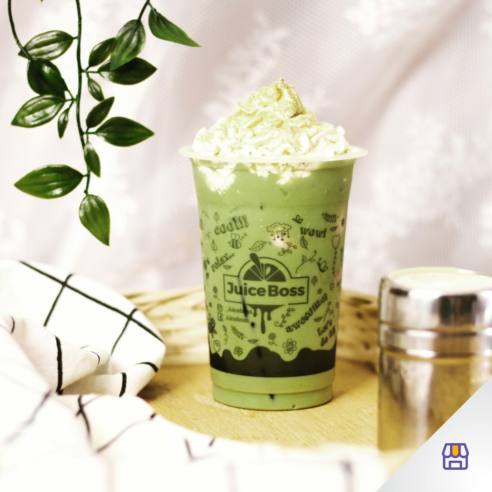
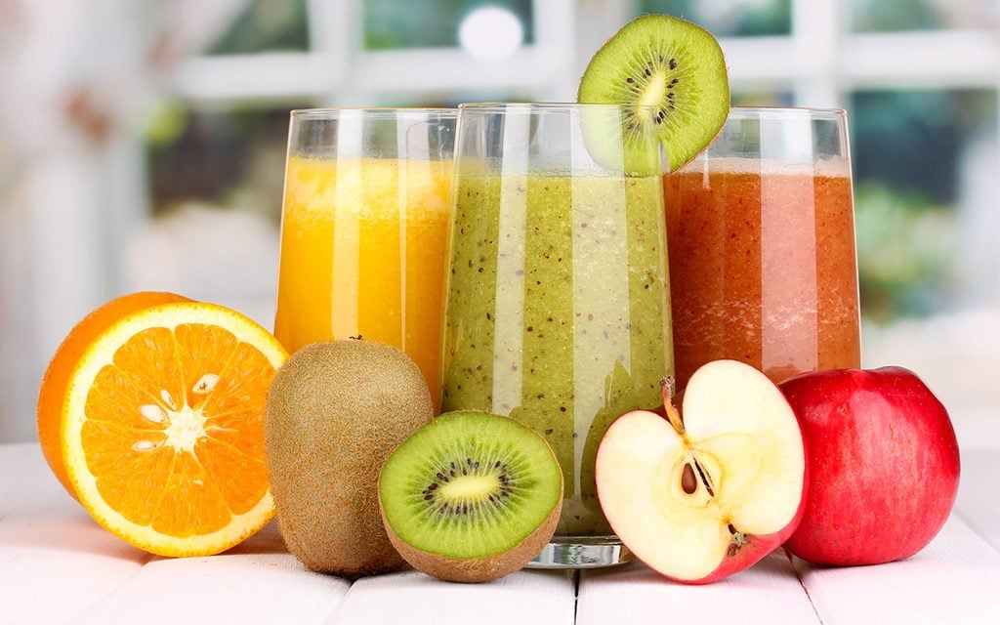

Coffee

Kopi (bahasa Belanda: koffie, bahasa Inggris: coffee) atau kahwa adalah tanaman industri pertanian yang dijadikan minuman hasil seduhan biji kopi yang telah disangrai dan dihaluskan menjadi bubuk, Kopi sebelum dapat diminum melalui proses panjang, yaitu dari pemanenan buah tanaman kopi yang telah matang, baik dengan cara mesin maupun dengan tangan, emudian dilakukan pemrosesan biji kopi dan pengeringan sebelum menjadi kopi gelondong. Proses selanjutnya, yaitu penyangraian dengan tingkat derajat yang bervariasi. Setelah itu, biji kopi digiling atau dihaluskan menjadi bubuk sebelum dapat diminum.
Tea
Teh (bahasa Inggris: tea, bahasa Belanda: thee) (Hanzi: 茶; Pinyin: chá; Pe̍h-ōe-jī: tê) adalah minuman yang mengandung kafeina, sebuah infusi yang dibuat dengan cara menyeduh daun, pucuk daun, atau tangkai daun yang dikeringkan dari tanaman Camellia sinensis dengan air panas, Teh yang berasal dari tanaman teh dibagi menjadi empat kelompok: teh hitam, teh oolong, teh hijau, dan teh putih. Istilah "teh" juga digunakan untuk minuman yang dibuat dari buah, rempah-rempah atau tanaman obat lain yang diseduh, misalnya teh rosehip, camomile, krisan, dan jiaogulan. Teh yang tidak mengandung daun teh disebut teh herbal. Teh merupakan sumber alami kafeina, teofilin, dan antioksidan dengan kadar lemak, karbohidrat atau protein mendekati nol persen. Cita rasa agak pahit dari teh merupakan kenikmatan tersendiri dari teh.
Juice
Jus buah adalah minuman yang diperoleh dengan mencampur air minum, sari buah atau campuran sari buah yang tidak difermentasi, dengan satu jenis buah atau lebih, dengan atau tanpa penambahan gula serta bahan tambahan pangan lainnya yang diizinkan, Jus buah juga dapat menjadi sumber energi saat tubuh merasa lelah dan kurang berenergi. Rasa lelah dan lesu dapat menjadi tanda bahwa tubuh kekurangan nutrisi dan cairan. Jus buah sangat cocok untuk mengembalikan energi tubuh. Layaknya kafein, jus buah dapat memperbaiki fokus dan konsentrasi.